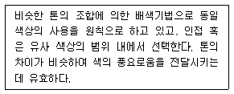
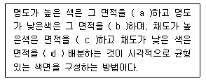
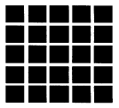

컬러리스트기사 (2003-03-16 기출문제)
1과목: 색채심리 마케팅
1. 다음 안전색과 일반적인 그 사용 예가 잘못 연결된 것은?
- 빨강 - 방화 표지, 화약 경고표, 금지 표지
- 노랑 - 주의 표지, 감전 주의 표지, 바닥의 돌출물
- 파랑 - 관리구역, 비상구 방향 표지, 구명대
- 녹색 - 대피소 위치 표지, 구호 표지, 노동 위생기
(정답률: 알수없음)

2. 소비자의 신제품 수용과정이 올바르게 배열된 것은?
- 관심→ 인지→ 시용→ 평가→ 수용
- 인지→ 관심→ 평가→ 시용→ 수용
- 관심→ 평가→ 시용→ 인지→ 수용
- 인지→ 관심→ 수용→ 평가→ 시용
(정답률: 알수없음)
3. 다음 제품의 색채 시장조사 내용 중 가장 적절하지 못한 것은?
- 시장동향
- 소비자의 생활 유형
- 선호 색상 및 형태
- 시대적 배경
(정답률: 알수없음)
4. 소비자 행동은 외적, 환경적 요인과 내적, 심리적 요인에 영향을 받는다. 다음 중 소비자의 내적, 심리적 영향 요인이 아닌 것은?
- 경험, 지식
- 개성
- 동기
- 준거집단
(정답률: 알수없음)
5. 홍보 매체 중 TV의 특성에 대한 설명이 잘못된 것은?
- 표적고객을 선별할 수 있다.
- 시, 청각에 동시에 소구할 수 있다.
- 접근범위가 넓고 속도가 빠르다.
- 많은 규제와 시민적 반감이 있다.
(정답률: 알수없음)
6. 색채가 가지고 있는 상징적 특징을 묘사한 내용 중 잘못 된 것은?
- 색채는 국제적으로 이해되어질 수 있는 언어로서 커뮤니케이션의 좋은 도구가 된다.
- 색채는 다양한 문화권에서 상징적인 의미를 전달하는 역할을 해왔다.
- 색채의 상징성은 시대나 문화에 따라 영향을 받지 않으며, 한번 정한 색의 의미는 시간이 지나도 본래의 의미를 잃지 않는 특성이 있다.
- 국제적인 언어로 인지되는 색채가 사용된 좋은 예로서 안전을 위한 표준색을 들 수 있다.
(정답률: 알수없음)
7. 공감각에 의해 색과 특정한 모양의 관계성을 추출한 대표적인 색채학자는?
- 먼셀
- 프라운 호퍼
- 헬름홀츠
- 요하네스 이텐
(정답률: 알수없음)
8. 색채의 사회적 역할에 관한 설명 중 옳은 것은?
- 특정한 사회에서 통용되는 색에 대한 고정관념이란 없다.
- 사회가 고정되고 개인의 독립성이 뒤쳐진 사회에서는 색채가 다양하고 화려해지는 경향이 있다.
- 사회의 관습이나 권력에서 해방되면 부수적으로 관련된 색채연상이나 색채금기로부터 자유로워질 수 있다.
- 사회안에서 선택되는 색채의 선호도는 남성과 여성과 같은 성에 의한 차이가 없이 유사하다.
(정답률: 알수없음)
9. 인간의 욕구를 5단계로 나누어 놓은 매슬로우의 욕구단계 중 가장 상위 계층에 속하는 욕구단계는?
- 자아실현 욕구
- 사회적 욕구
- 생리적 욕구
- 안전 욕구
(정답률: 알수없음)
10. 마케팅에서 고려해야할 중요한 요인중 하나인 하위 문화(subculture)를 가장 올바르게 설명한 것은?
- 사회안에서 가장 경제적으로 어려운 집단에서 생기는 문화
- 동일문화권속의 구성원 중에서 비교적 공통된 생활경험과 상황을 갖는 사람들끼리 유사한 가치관과 라이프 스타일을 갖게되는 것
- 흑인계통 또는 백인계통에서만 볼수 있는 문화특성
- 매스 마케팅에서 가장 초기에 시작되는 문화적 변화
(정답률: 알수없음)
11. 색채마케팅의 전략에서 소비자의 활동과 관심, 의견 등에 관한 스타일을 분석해서 유형별로 구분지어 놓은 것을 무엇이라고 하는가?
- 소비자 구매행동 분석
- 라이프 스타일 분석
- 색채이미지 분석
- 소비자 선호도 조사
(정답률: 알수없음)
12. 제품의 색채 계획 단계에는 기획단계, 디자인단계, 생산 단계가 있다. 기획단계에서 해야 할 것이 아닌 것은?
- 제품 기획
- 시장과 소비자조사
- 주조색, 보조색, 강조색 결정
- 색채정보분석
(정답률: 알수없음)
13. 상징화된 단순한 그래픽과 그림문자에 의해 컴퓨터 그래픽 인터페이스 디자인에서 아이콘으로 사용하게 된 것은?(오류 신고가 접수된 문제입니다. 반드시 정답과 해설을 확인하시기 바랍니다.)
- 아이소타이프
- 다이아그램
- 타이포그래피
- 픽토그램
(정답률: 알수없음)
14. 매체와 색채전략의 연결이 가장 올바른 것은?
- 픽토그램 - 단순 명료, 교통 신호체제에서의 색채
- C.I.P - 코카콜라, 맥도널드의 강하고 단순한 색상을 통한 깊은 브랜드 이미지
- 수퍼 그래픽 디자인 - 색채는 제품의 이미지 및 전체 분위기를 나타내는 중요한 역할
- 타이포그래피 - 상품의 특성을 분명히 해주고 구매충동을 유발하는 색채 적용 필요
(정답률: 알수없음)
15. 색상대비나 명도대비 현상과 가장 관련이 있는 것은?
- 기억색
- 항상성
- 착시
- 연색성
(정답률: 알수없음)
16. 색채의 공감각에 대한 설명 중 가장 올바른 것은?
- 색채의 특성이 다른 감각으로 표현되는 것
- 채도가 높은 색채의 바탕위에 있는 탁색이 더 맑게 느껴 지는 것
- 혼색에의한 결과 색을 미리 예측 할 수 있는 것
- 조명색, 환경 등이 바뀌어도 본래의 색으로 인식하고자 하는 것
(정답률: 알수없음)
17. 동서양의 문화에 따른 색채 정보의 활용이 잘못된 예는?
- 신성시 되는 종교색 - 노랑
- 왕권을 대표하는 색 -노랑
- 봄과 생명의 탄생 - 녹색
- 평화, 진실, 협동 - 자주
(정답률: 알수없음)
18. 다음 선호색에 대한 일반적 경향을 설명한 내용 중 가장 잘못된 것은?
- 자동차 선호색은 각 지역의 자연환경, 온도 및 습도, 생활패턴 등에 따라 차이가 있다.
- 한국의 경우 중형차는 어두운 색을, 소형차는 경쾌한색을 선호하는 경향이 있다.
- 동일한 제품이라도 여성용 제품에서는 파스텔톤의 밝은 색채가 주로 사용된다.
- 제품의 특성에 따라 선호되는 색채는 유행에 따라서 변화되지 않는다.
(정답률: 알수없음)
19. 조사를 위한 표본 크기에 대한 적절한 설명이 아닌 것은?
- 표본의 오차는 표본의 크기와 모집단 크기의 비에 정비례하는 경향이 있다.
- 표본의 사례 수는 오차와 관련되어 있다.
- 적정 표본 크기는 허용오차 범위에 의해 달라진다.
- 전문성이 부족한 연구자들은 선행연구의 표본 크기를 고려하여 따른다.
(정답률: 알수없음)
20. 다음 중 오스굿이 고안한 3가지로 집약되는 의미의 주요 요인이 아닌 것은?
- 좋다 - 나쁘다
- 크다 - 작다
- 빠르다 - 느리다
- 선명하다 - 은은하다
(정답률: 알수없음)
2과목: 색채디자인
21. 색채계획 과정에서 컬러이미지의 계획능력, 컬러 콘설턴트의 능력은 다음 어느 단계에서 크게 요구 되는가?
- 색채환경분석
- 색채심리분석
- 색채전달계획
- 디자인에 적용
(정답률: 알수없음)
22. 다음 건물공간에 따른 색의 선택에 관한 설명 중 가장 적절치 않은 것은?
- 사무실은 30%의 반사율을 가진 온회색(warm gray)이 적당하다.
- 상점에서 상품자체가 밝은 색채를 가진 경우 일반적으로 그 상품을 부드럽게 보이기 위해 같은 색채를 배경으로 한다.
- 병원에서 회복기 환자실은 복숭아색, 또는 부드러운물색이 좋다.
- 학교색채에 있어 밝은 연녹색, 물색의 벽은 집중력을 준다.
(정답률: 알수없음)
23. 시장 세분화(market segmentation)의 방법이 아닌 것은?
- 연령, 성별, 수입, 직업별로 나누는 인구학적 세분화
- 지역, 도시크기, 인구밀도 등으로 나누는 지리적 세분화
- 문화, 종교, 사회 계층 등으로 나누는 사회 문화적 세분화
- 제품의 색상이나 외관 등에 의한 이미지 세분화
(정답률: 알수없음)
24. 다음 내용은 어떠한 배색 방법에 대해 기술 한 것인가?

- 톤 온 톤(Tone on Tone) 배색
- 톤 인 톤(Tone in Tone) 배색
- 토널(Tonal) 배색
- 비콜로(Bicolore) 배색
(정답률: 알수없음)
25. 효과적인 멀티미디어 디자인을 위한 GUI(Graphic UserInterface)의 원칙을 설명한 것 중 틀린 것은?
- 일관성 - 화면을 디자인할 때 타이포그래피의 기술을 사용하는 것을 말한다.
- 경제성 - 커뮤니케이션에 꼭 필요한 요소들로 구성하고 디자인 대상물을 명료하게 표현하고 중요 정보와 기타정보를 명확히 구분한다.
- 조직성 - 사용자에게 정보를 전달하고자 할 때 명백하고 일관성 있는 개념 구조를 제공한다.
- 의사소통성 - 정보의 모습을 사용자의 특성에 적절하게 조절하는 적합성을 말하며 사용자의 연령, 사용시간, 교육수준, 성별, 기호 등을 고려하여 메타포 용어와 상징을 사용하여 디자인한다.
(정답률: 알수없음)
26. 다음 중 환경을 고려한 디자인방법과 거리가 먼 것은?
- 재료절약
- 제품수명 연장
- 재활용, 재사용
- 화학물로 폐기물 분해
(정답률: 알수없음)
27. 19세기 말에서 20세기 초에 일어났던 양식운동으로서 자연물의 유기적 형태를 빌려 건축의 외관이나 가구, 조명, 실내 장식, 회화, 포스터 등을 장식할 때 사용되었던 양식은?
- 아르누보(Art Nouveau)
- 미술 공예운동(Art and Craft Movement)
- 디 스틸(De Stijl)
- 모더니즘(Modernism)
(정답률: 알수없음)
28. 다음 중 디자인의 조형활동을 평가하기 위한 요건과 거리가 가장 먼 것은?
- 디자인의 유기성
- 디자인의 경제성
- 디자인의 합리성
- 디자인의 질서성
(정답률: 알수없음)
29. 도구의 개념으로 물건을 창조하는 분야는?
- 시각디자인
- 제품디자인
- 환경디자인
- 건축디자인
(정답률: 알수없음)
30. 윌리암 모리스 (William Morris)의 디자인운동과 관계가 먼 것은?
- 예술의 민주화, 사회화 주창
- 중세 고딕 (Gothic)의 형식언어 추구
- 레드 하우스 (Red House) 의 건립
- '베니스의 돌 (The Stone of Venice)' 저술
(정답률: 알수없음)
31. 시각을 통해 느낄 수 있는 물체의 표면상 특징은?
- 매스(mass)
- 텍스처
- 색조
- 점증
(정답률: 알수없음)
32. 유기적 형태에 속하는 것은?
- 순수 형태
- 기하학적 형태
- 자연 형태
- 추상 형태
(정답률: 알수없음)
33. 형태 지각심리(gestalt psychology)의 4개 법칙에 해당되지 않는 것은?
- 보완성
- 접근성
- 유사성
- 폐쇄성
(정답률: 알수없음)
34. 디스플레이 디자인(Display Design)에 대한 설명 중 잘못된 것은?
- 물건을 공간에 배치, 구성, 연출하여 사람의 시선을 유도하는 강력한 이미지 표현이다.
- 디스플레이의 구성 요소는 상품, 고객, 장소, 시간이다.
- P.O.P.(Point of Purchase)는 비상업적 디스플레이에 활용된다.
- 시각 전달 수단으로서의 디스플레이는 사람, 물체, 환경을 상호 연결시킨다.
(정답률: 알수없음)
35. 팝아트(Pop art)에 관한 설명 중 가장 적합한 것은?
- 인간의 시지각원리에 근거한 것이다.
- 대중예술에서 유래된 말로, 1960년대에 뉴욕을 중심으로 전개되었던 미술의 한 경향을 가리킨다.
- 여성의 주체성을 찾고자한 운동이다.
- 분해, 풀어헤침 등 파괴를 지칭하는 행위이다.
(정답률: 알수없음)
36. 근래의 디자인에서 친자연성의 중요성은 더욱더 강조되고있다. 친자연성의 의미를 가장 잘 설명한 것은?
- 디자인에서 생물의 대칭적인 모습을 강조한다.
- 모든 디자인 영역에서 자연색을 주제로한 디자인만을 한다.
- 디자인 재료의 선택에 있어 주로 인공재료를 사용한다.
- 디자인의 태도는 자연의 공생과 상생의 측면에서 이루어져야 한다.
(정답률: 알수없음)
37. 리디자인(Re-Design)의 개념은?
- 신제품의 디자인 개발
- 제품디자인의 개선
- 판매를 위한 디자인 개발
- 제품판매를 위한 판촉활동
(정답률: 알수없음)
38. 신문광고의 특징이 아닌 것은?
- 반복율과 보존율이 높다.
- 인쇄나 컬러의 질이 다양하지 않다.
- 많은 신문을 따로 따로 취급해야 한다.
- 광고의 수명이 짧고 독자의 계층을 선택하기 어렵다.
(정답률: 알수없음)
39. 다음 중 패션디자인의 주 요소와 비교적 거리가 먼 것은?
- 선
- 재질
- 색채
- 장식
(정답률: 알수없음)
40. 색은 상품 판매 전략을 위한 커뮤니케이션에 있어서 매우 중요한 역할을 하고 있다. 이와같은 목적으로 활용되는 색채언어 능력을 설명한 다음 내용 중 가장 거리가 먼 것은?
- 더욱 강한 영향을 주기 위해
- 눈의 착시 현상을 창출하기 위해
- 가독성을 낮추기 위해
- 암시성을 주기 위해
(정답률: 알수없음)
3과목: 색채관리
41. 한국산업규격(KS)에 의한 색에 관한 용어에 대한 설명 중 옳지 않은 것은?
- 휘도순응:시각계가 시야의 휘도에 순응하는 과정 또는 순응한 상태
- 명순응:3cd·m-2 정도 이상인 휘도의 자극에 대한 휘도순응
- 색순응:암순응 상태에서 시각계가 시야의 색에 순응하는 과정
- 암순응:약 0.03cd·m-2 정도 이하인 휘도의 자극에 대한 휘도순응
(정답률: 알수없음)
42. 표면광택에 대한 설명으로 가장 적절한 것은?
- 투과하는 빛의 굴절각이 크면 클수록 표면에서 정반사 성분은 커진다.
- 표면에서 정반사되는 빛의 성분은 도색층의 색채와 일치한다.
- 표면에서 정반사되는 빛의 성분은 도색층의 보색과 일치한다.
- 빛이 매질의 경계면을 통과할 때에는 항상 같은 량의 빛이 정반사된다.
(정답률: 알수없음)
43. 광원의 분광복사강도분포에 대한 설명 중 맞는 것은?
- 백열전구는 단파장보다 장파장의 복사분포가 매우적다.
- 백열전구 아래에서의 난색계열은 보다 생생히 보인다
- 형광등 아래에서는 단파장보다 장파장의 반사율이 높다.
- 형광등 아래에서의 한색계열은 색채가 죽어 보인다.
(정답률: 알수없음)
44. 육안으로 색을 비교할 때의 주의사항이다. 맞는 것은?
- 초록색을 비교한 경우 노란색을 바로 비교해서는 안된다.
- 관찰자는 색에 영향을 주는 선명한 색의 옷을 입어야한다.
- 높은 채도의 색을 검사한 다음 낮은 채도의 색을 바로 검사한다.
- 여러 색채를 검사하는 경우 피로해지기 전에 빨리 계속 검사를 한다.
(정답률: 알수없음)
45. 염료에 대한 설명 중 맞는 것은?
- 천연염료-주로 식품이나 의약품에 착색되는 염료이다
- 합성염료-그림물감으로 이용되는 것이 많다.
- 식용염료-천연물에서 채취하여 식품에만 고유하게 사용되는 염료로 우리나라에서는 식품위생법에 따른 제한을 받는다.
- 형광염료-주로 종이, 합성섬유, 합성수지, 펄프, 양모 등을 보다 희게 하기 위해 사용된다.
(정답률: 알수없음)
46. 디지털 입력 시스템에 관한 설명으로 맞는 것은?
- PMT(광전 배증관 드럼 스캐닝)는 유연한 원본들을 스캔할 수 있다.
- A/D컨버터는 디지털 전압을 아날로그 전압으로 전환 시킨다.
- 불투명도(opacity)는 투과도(T)와 반비례하고 반사도(R)와는 비례한다.
- CCD센서들은 녹색, 파란색, 빨간색에 대하여 균등한 민감도를 가진다.
(정답률: 알수없음)
47. 가스방전에 의한 빛을 이용한 광원으로서 고압, 고열을 내므로 열선흡수 필터와 냉각팬이 장치되어 있고 평균 주광의 에너지 분포와 매우 닮은 특색이 있는 광원은?
- LED(Light Emitting Diode)
- 크세논(Xenon) 램프
- 형광(Fluorescent) 램프
- 할로겐(halogen) 램프
(정답률: 알수없음)
48. 모니터의 색온도에 관한 설명으로 틀린 것은?
- 색채 교정용 소프트웨어 사용시 분석대상은 빨강, 녹색, 파랑, 검정색이다.
- 모니터의 색온도가 높아질수록 시감은 따뜻한 색에서 차가운 색으로 변한다.
- RGB 각각에 R=0, G=0, B=0의 수치를 주어 디스플레이 하면 전압 영역이 검은색이 된다.
- RGB 각각에 R=255, G=255, B=255의 수치를 주어 디스플레이하면 전체 화면이 흰색이 된다.
(정답률: 알수없음)
49. 육안으로 채도가 강한 색채를 오래 관측하다가 새로운 색채시료를 관측하면 관측했던 색상의 보색 방향으로 잔상이 나타나 다르게 보일 때 색채 관측시 가장 좋은 방법은?
- 회색을 장시간 응시하거나 눈을 감고 잔상이 사라질 때까지 기다린다.
- 보색이 되는 색을 2∼3분 바라본다.
- 동일 색상의 채도가 낮은 색을 응시한다.
- 동일 채도의 보색 색상을 약 5분간 응시한 다음 흰색을 바라본다.
(정답률: 알수없음)
50. 다음 중 디바이스 종속 색채계(device dependent colorsystem)는?
- CIE XYZ 색채계, LUV 색채계, CMYK 색채계
- LUV 색채계, CIE XYZ색채계, ISO 색채계
- RGB 색채계, HSV 색채계, HLS 색채계
- CIE RGB 색채계, CIE XYZ 색채계, CIE LAB 색채계, ISO 색채계
(정답률: 알수없음)
51. 픽셀(pixel)로 이루어진 디지털 색채 영상을 무엇이라 하는가?
- 벡터그래픽영상
- 비트맵영상
- CEPS
- 일렉트로 포토그라피
(정답률: 알수없음)
52. 다음 중 디지털 이미지의 컬러모드에 속하지 않는 것은?
- Grayscale
- Targa
- Duotone
- Bitmap
(정답률: 알수없음)
53. 컴퓨터 자동배색(Computer Color Matching)을 도입하는 목적 또는 장점이라고 할 수 없는 것은?
- 다품종 소량에 대응
- 고객의 신뢰도 구축
- 메타메리즘의 효율적인 형성
- 컬러런트 구성의 효율화
(정답률: 알수없음)
54. ISO 색채규정에 대한 설명 중 틀린 것은?
- XYZ 색표계는 양적인 표시로 색의 느낌을 알기 어렵다.
- Yxy의 경우 빛의 색표기와 관리에 이용된다.
- 현재 섬유 업계에서 색채관리를 위해 사용하는 것은 Munsell 및 NCS 색표계이다.
- 색차와 인간의 시감판정과 일치하지 않는 점을 개량한 것이 CMC색차식이다.
(정답률: 알수없음)
55. 다음중 CIE L*a*b* 색표계에서 a*에 해당되는 색의 영역은 무엇인가?
- red-blue
- yellow-blue
- red-green
- red-yellow
(정답률: 알수없음)
56. 필터식 색채측정 장치에서 빛을 전기적 신호로 바꾸는 역할을 하는 곳은?
- 텅스텐램프
- 시료대
- 광검출기
- 전산장치
(정답률: 알수없음)
57. 색채가 선명하지는 않으나 우아하고 독특한 색채를 보여 줌으로써 고급품의 섬유염색에 이용되고 있는 염료는?
- 직접염료
- 식용염료
- 형광염료
- 천연염료
(정답률: 알수없음)
58. 물체와 물체간의 색차를 간단하게 육안으로 판정할 때에 선호되는 측정 방법은?
- 0/45
- d/0
- SPIN
- SPEX
(정답률: 알수없음)
59. 육안조색에 있어서 색채 조절시 주의할 점이 아닌 것은?
- 명도의 차이
- 채도의 차이
- 색상의 방향과 정도
- 색상 대비의 차이
(정답률: 알수없음)
60. 색영역과 색채구현 방법에 대해 설명한 것이다. 맞는 것은?
- 컴퓨터 모니터의 색채 구현과 프린터의 색채 구현은 근본적으로 다른 원리이다.
- 유성페인트와 수성페인트는 주색을 이루는 색료와 색채가 동일하다.
- LCD 모니터의 경우는 RGB의 픽셀로 감법혼색을 하는 원리를 가지고 있다.
- 사진필름의 경우 양화필름과 음화필름의 명도범위(dynamic range)는 거의 유사하다.
(정답률: 알수없음)
4과목: 색채지각론
61. 다음 심리보색에 대한 설명 중 올바른 것은?
- 회전혼색의 결과 유채색이 되는 보색
- 우리 눈의 잔상현상에 따른 보색
- 색상환에서 마주보는 색
- 회전혼색의 결과 무채색이 되는 보색
(정답률: 알수없음)
62. 다음 색 중 명소시에서 암소시 상태로 옮겨질 때 시감도가 높아져서 가장 밝게 보이는 것은?
- 파랑
- 빨강
- 노랑
- 주황
(정답률: 알수없음)
63. 장시간 머무는 대합실 등에 적합한 색으로 다음 중 가장 좋은 것은?
- 진출색
- 단파장의 색
- 저명도의 색
- 고채도의 색
(정답률: 알수없음)
64. 다음 색채대비 중 스테인드 글라스에 많이 사용되고, 현대회화에서는 마티스, 피카소 등이 많이 사용한 예가 있는 것은?
- 색상대비
- 명도대비
- 채도대비
- 한난대비
(정답률: 알수없음)
65. 백색광을 노란색(yellow) 필터와 시안색(cyan) 필터를 겹쳐 통과시킬 때 가장 근접한 통과된 빛의 파장은?
- 400nm∼500nm
- 500nm∼600nm
- 600nm∼700nm
- 700nm∼800nm
(정답률: 알수없음)
66. 다음 중 빛과 색에 관한 설명 중 틀린 것은?
- 빛이 변하면 색도 변한다.
- 자연광 아래에서는 물체의 고유한 색을 볼 수 있다.
- 색채현상은 사물 자체의 물성, 빛의 특성, 시지각 특성이 서로 연계되어 보여지게 된다.
- 백색광아래서 우리가 보는 물체의 색채는 물체에 의해 흡수된 색광과 보색관계에 있는 색특성을 주로 지니고 있다.
(정답률: 알수없음)
67. 사람의 관심을 끌어야 하는 직업을 가진 사람의 의상색을 정할 때 특히 고려해야 할 점은?
- 색의 항상성
- 색의 운동감
- 색의 상징성
- 색의 주목성
(정답률: 알수없음)
68. 다음 중 베졸드 효과와 관련이 큰 것은?
- 병치혼색
- 가법혼색
- 감법혼색
- 회전혼색
(정답률: 알수없음)
69. 색의 면적효과에 대한 다음 설명 중 틀린 것은?
- 동일한 색이라도 면적이 커지면 명도가 증가된다.
- 동일한 색이라도 면적이 커지면 채도가 증가된다.
- 면적이 커질수록 색이 뚜렷해진다.
- 옷감을 고를 때 작은 견본을 보고 고른 것은 면적효과를 줄이기 위해서이다.
(정답률: 알수없음)
70. 다음 가산혼합에 대한 설명 중 틀린 것은?
- 혼합하면 원래의 색보다 명도가 높아진다.
- 삼원색은 적색(R), 녹색(G), 청색(B)이다.
- 모든 색을 같은 양으로 혼합하면 검은색이 된다.
- 색광혼합을 가산혼합이라 한다.
(정답률: 알수없음)
71. 다음 내용은 면적대비에 대한 일반적인 설명이다. 빈칸에 차례로 들어갈 말은?

- a 크게, b 작게, c 크게, d 작게
- a 작게, b 크게, c 작게, d 크게
- a 작게, b 크게, c 크게, d 작게
- a 크게, b 작게, c 작게, d 크게
(정답률: 알수없음)
72. 다음 그림과 같은 격자무늬를 바라보면 흰 선들이 교차하는 교점에 어두운 반점과 같은 것이 보인다. 이 현상을 설명하는 것과 관련이 없는 것은?

- 연변대비
- 하만 도트
- 리프만 효과
- 명암대비
(정답률: 알수없음)
73. 색감의 차이는 빛의 어떤 특성에 따라 나타나는가?
- 백색광의 차이
- 빛의 세기
- 빛의 파장
- 빛의 굴절
(정답률: 알수없음)
74. 색의 식별력에 대한 시각적 성질을 색의 명시성이라고 한다. 명시성에 대해 틀린 설명은?
- 명도가 같을 때 채도가 높은 쪽이 쉽게 식별 된다.
- 간상체와 추상체의 작용과 관계 된다.
- 바탕색과의 관계에서 명도의 차이가 클 때 높다.
- 바탕색과의 관계에서 채도의 차이가 적을 때 높다.
(정답률: 알수없음)
75. 흥분과 침정과 같은 색채의 감정적인 효과가 가장 큰색의 속성은?
- 색상
- 명도
- 채도
- 순도
(정답률: 알수없음)
76. 다음 추상체에 대한 설명 중 잘못된 것은?
- 간상체에 비하여 해상도가 떨어진다.
- 색채지각과 관련된 광수용기이다.
- 눈의 망막 중 중심와에 존재하는 광수용기이다.
- 간상체보다 광량이 풍부한 환경에서 활동하며 색채감각을 일으키는 역할을 한다.
(정답률: 알수없음)
77. 서로 보색관계인 두색을 인접시켰을 때 서로의 영향으로 본래의 색보다 어떤 특성이 높아 보이는가?
- 명도
- 채도
- 색상
- 순응도
(정답률: 알수없음)
78. 다음 색에 관한 설명 중 맞는 것은?
- 인간은 약 200개의 색 만을 변별할 수 있다.
- 색의 밝기를 채도라 한다.
- 색의 순도를 명도라 한다.
- 유사한 색끼리 근접하여 배열한 원을 색상환이라 한다.
(정답률: 알수없음)
79. 다음 색 혼합에 관한 설명 중 틀린 것은?
- 감산혼합의 2차색은 가산혼합의 1차색과 같은 색상이다.
- 가산혼합의 2차색은 감산혼합의 1차색과 같은 색상이다.
- 감산혼합의 2차색은 가산혼합의 1차색보다 순도가 높다.
- 가산혼합의 2차색은 감산혼합의 1차색보다 밝기가 떨어진다.
(정답률: 알수없음)
80. 다음 색채지각효과 중 특성이 다른 것은?
- 동화효과
- 줄눈효과
- 베졸드효과
- 대비효과
(정답률: 알수없음)
5과목: 색채체계론
81. 국제조명위원회가 1931년에 발표한 CIE표준표색계에서 제시하고 있는 색도도를 바르게 설명한 것은?
- 말발굽형의 바깥둘레에 나타난 모든 색은 스펙트럼의 순수파장의 색이다.
- 색도도내의 임의의 두 점을 잇는 직선을 그을 때, 그직선의 양 끝색은 서로 보색이다.
- 색도도내의 임의의 한 점은 혼합색을 나타내며 밝기와 포화도를 함께 읽을 수 있다.
- 색도도 바깥둘레의 한 점과 백색점(C)을 잇는 선 위에는 포화도만으로 된 색의 변화가 나타난다.
(정답률: 알수없음)
82. 먼셀표색계의 기본 5색상이 아닌 것은?
- 연두
- 보라
- 파랑
- 노랑
(정답률: 알수없음)
83. 오스트발트 표색계에 대한 설명이 잘못된 것은?
- Y, R, B, G의 4원색을 기준으로 한 24색상환이 있다.
- 명도와 채도를 따로 분리하여 표시한다.
- 색삼각형에서 모든 색상의 동일 순도를 가진 색은 같은 위치에 있다.
- 색입체는 정삼각구도의 사선배치로 이루어져 있다.
(정답률: 알수없음)
84. 관용색에 대한 설명 중 옳은 것은?
- 우리의 고유색명으로는 흑, 백 등이 있다.
- 동물의 이름에서 유래된 것으로는 살색, 쥐색 등이 있다.
- 식물의 이름에서 유래된 것으로는 세피아 등이 있다.
- 광물에서 유래된 것으로는 라벤더 등이 있다.
(정답률: 알수없음)
85. 다음 전통색 이름과 내용의 연결이 맞는 것은?
- 지황색 (芝黃色) : 종이의 백색이다.
- 연지색 (嚥脂色) : 적색과 자색의 혼합색, 이마에 찍으면 곤지가 된다.
- 감색 (紺色) : 아주 연한 붉은색이다.
- 치색(輜色) : 비둘기의 깃털색이다.
(정답률: 알수없음)
86. 저드(D. Judd)에 의해 제시된 색채조화의 원리 중,「색의 체계에서 규칙적으로 선택된 색들의 조합은 대체로 아름답다.」라는 성질에 해당하는 것은?
- 친밀성의 원리
- 비모호성의 원리
- 유사의 원리
- 질서의 원리
(정답률: 알수없음)
87. 오스트발트(W.Ostwald)의 색채 조화론과 관련 있는 것은?
- 균형이론(balance weight)
- 동일조화(identity)
- 등순계열(isochroma series)조화
- 미도(aesthetic measure)조화
(정답률: 알수없음)
88. 오스트발트 표색기호 17 lc에 대한 설명으로 맞는 것은?
- 17은 명도, lc는 색상기호을 의미한다.
- 색상 17, 명도 l, 채도c 의 색을 의미한다.
- 17은 색상기호, lc는 백색량· 흑색량을 의미한다.
- 색상기호 - 흑색량 - 백색량의 순서를 의미한다.
(정답률: 알수없음)
89. 스웨덴의 NCS 표색계의 색표기 방식에 따라 표기한 유채색 중 가장 비슷한 색의 쌍은?
- 1020-Y90R, 1030-Y90R
- 2030-Y50R, 2030-B50G
- 1020-R20B, 2070-R20B
- 6030-R50B, 1020-R10B
(정답률: 알수없음)
90. 다음 먼셀 표기법에 의한 기호의 설명 중 맞는 것은?
- 9R 9/3 : 자주기미를 띤 채도 9 명도 3의 빨강이다.
- 2Y 5/9 : 주황기미를 띤 명도5, 채도9 의 노랑이다.
- 1GY 7/7 : 초록기미를 띤 명도7 채도7의 청록색이다.
- 8BG 1/3 : 채도1 명도3의 밝고 짙은 청록색이다.
(정답률: 알수없음)
91. 색채조화를 위한 올바른 계획 방향이 아닌 것은?
- 색채조화는 주변요인에 영향을 받으므로 상대적이기보다 절대성, 개방성을 중시해야 한다.
- 공간에서의 색채조화를 위해서는 시간의 흐름에 따른 변화를 고려해야 한다.
- 자연의 다양한 변화에 따른 색조개념으로 계획해야한다.
- 조화에 영향을 주는 변수와 인간과의 관계를 유기적으로 해석해야 한다.
(정답률: 알수없음)
92. 먼셀 기호 5YR8.5/13에 대한 해석 중 맞는 것은?
- 명도는 8.5 이다.
- 색상은 붉은기미의 보라이다.
- 채도는 5/13 이다.
- 색상은 YR8.5 이다.
(정답률: 알수없음)
93. 색을 표시하는 표색계로서 빛의 혼색실험에 기초를 두고 있으며, 현재 측색학의 대종을 이루는 혼색계의 대표적인 것은?
- NCS 표색계
- 먼셀표색계
- CIE 표색계
- 오스트발트표색계
(정답률: 알수없음)
94. 한국산업규격의 색명(KS A0011)에 대한 옳은 설명은?
- 일반적인 색명은 관용색명으로 기술된다.
- 일반색명은 유채색의 색명으로만 이루어져 있다.
- 수식어는 기본색상명 뒤에 붙인다.
- 유채색의 명도 및 채도에 관한 수식어가 있다.
(정답률: 알수없음)
95. P.C.C.S(Practical Color Coordinate System)톤의 분류에서 기호 d의 의미는?
- 칙칙한
- 연한
- 어두운
- 강한
(정답률: 알수없음)
96. 다음 물체색에 대한 설명 중 맞는 것은?
- 물리적인 빛의 혼색실험에 기초를 둔다.
- 특정 표준광에 대한 색도 좌표 및 시감반사율 등으로 표시한다.
- 색(color of light)을 표시하는 것이다.
- 색지각의 심리적 속성은 무시된다.
(정답률: 알수없음)
97. 다음 중 색명법의 종류가 다른 한개의 색이름은?
- 노랑 띤 회색
- yellowish Black(yBk)
- vivid Red
- 네이비 블루
(정답률: 알수없음)
98. 오스트발트의 조화론에 관한 설명 중 올바른 것은?
- 조화란 통일과 변화라고 하였다. 매우 감각적이며 배색의 처리방법이 정량적이고 단순하다.
- 등백계열에 속한 색들은 실제 순색의 양은 다르나 시각적으로 순도가 같아 보이는 색들이다.
- 두가지 이상 색사이의 합법적인 관계일 때, 이 색채들을 조화색이라 한다.
- 마름모꼴 조화는 인접색상면에서만 성립되며,「등차색환 조화」와 「사횡단 조화」가 나타난다.
(정답률: 알수없음)
99. 다음 중 JIS에 대한 올바른 표기는?
- 일본 국제규격
- 일본 실용배색 시스템
- 일본 산업규격
- 일본 교육규격
(정답률: 알수없음)
100. 음양오행사상에 따른 색채체계에서 다음 중 오정색(五正色)에 해당하지 않는 것은?
- 적색
- 황색
- 자색
- 백색
(정답률: 알수없음)